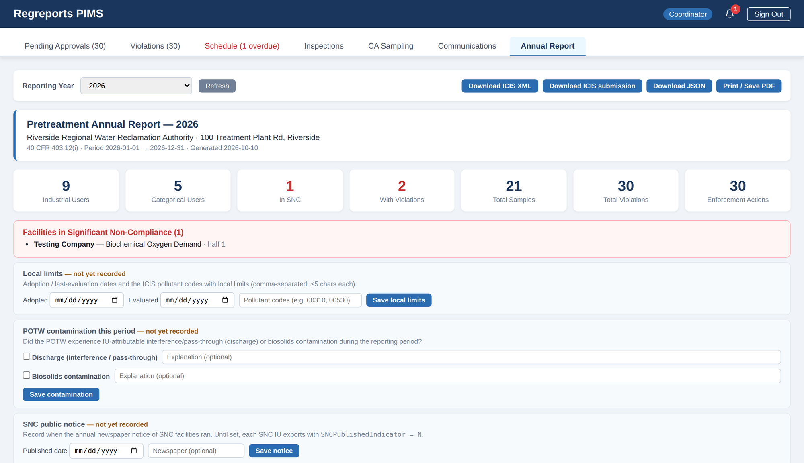
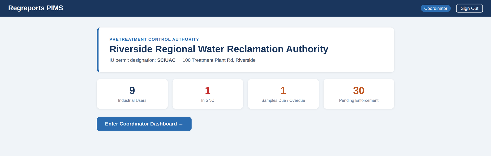

Flagship product
PIMS is the system of record for a municipal pretreatment program — every permit, sample, violation, surcharge, and enforcement action in one auditable place, built to the federal pretreatment regulations (40 CFR 403).
The industrial user submits a sample — or drags the lab-report PDF onto the OCR scanner and it fills in.
The compliance engine compares each result to the permit limits and records any violations.
The ERG matrix selects the right enforcement response and drafts the letter.
The coordinator reviews, edits, and approves — with a full audit trail behind every step.
Generate a draft permit from the facility's categorical standard (e.g. 40 CFR 433 Metal Finishing, 413 Electroplating), or upload a scanned permit and review the parsed limits before they go live. Permanent, never-reused IU permit numbers per 40 CFR 127.26(h).
OCR reads lab-report PDFs from multiple labs and formats — correctly handling non-detects, unit conversions to mg/L, and reporting limits — then matches each result to the permit.
Daily-maximum, monthly-average, and weekly-average checks; range limits like pH; the sufficiently-sensitive-method rule (40 CFR 122.44(i)); and below-PQL handling — all applied consistently and logged.
Flow-weighted BOD / TSS / color surcharges computed from reviewed monthly flow reports and the month's sample concentrations, with a finance-ready view.
A configurable ERG decision matrix maps each violation to an enforcement level and drafts the correspondence, keeping responses consistent and timely.
Separate access for industrial users, coordinators, finance, and admins; signed monthly certifications (40 CFR 403.12(l)); and a tamper-evident audit log on every change.
A look at PIMS — shown here with fictional demo data.


| COA analyte | Result | Unit | Matched parameter | Status |
|---|---|---|---|---|
| Biochemical Oxygen Demand | 420 | mg/L | BOD | In permit |
| Total Suspended Solids | 180 | mg/L | TSS | In permit |
| pH | 6.9 | s.u. | pH | In permit |
| Oil & Grease | 28 | mg/L | Oil & Grease | Not in permit |
| Copper | ND (<0.010) | mg/L | — | Non-detect |
| Total Phosphorus | 3.1 | mg/L | — | Unmatched |
Only rows marked In permit with numeric results are imported — non-detects and unmatched rows are excluded.
The decision matrix maps each excursion — category × recurring × potential harm — to a response level and base fine. These ship as sensible defaults; you can override the response or fine on any row to match your program's policy.
| Category | Recurring? | Potential harm? | Response | Base fine | |
|---|---|---|---|---|---|
| Discharge limit | No | No | WARNING | — | |
| Discharge limit | No | ✓ Yes | AO | $2,000 | |
| Discharge limit | ✓ Yes | ✓ Yes | CIVIL | $5,000 | |
|
Override the default for this scenario
| |||||
| Reporting | No | No | PHONE CALL | — | |
| Monitoring | ✓ Yes | No | AO | $500 | |
| Schedule miss | ✓ Yes | ✓ Yes | TERMINATION | — | |
PIMS is designed for POTW pretreatment coordinators and the industrial users they regulate — and for the finance and management staff who depend on accurate, defensible data. It maps to how your program actually works, so it fits your process instead of fighting it.
Bring a couple of permits and lab reports — we'll show you the full loop in minutes.